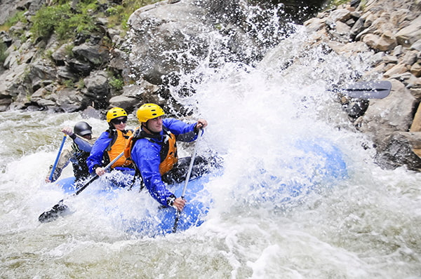
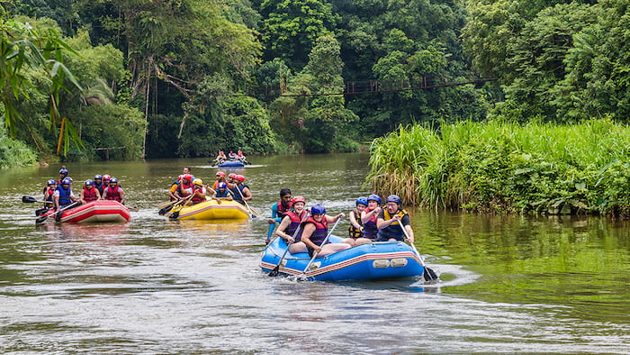

Rocky Ridge
Navigate exciting rapids and rocky passages while enjoying a thrilling river adventure.
Difficulty: Advanced

Whether you are discovering rafting for the first time or looking for your next adrenaline rush, we have a trip for you. Explore our adventures and find the experience that suits you.

Navigate exciting rapids and rocky passages while enjoying a thrilling river adventure.
Difficulty: Advanced

Take on a long and calming river route with unforgettable scenery.
Difficulty: Intermediate

Enjoy a scenic rafting experience with a mix of gentle river action and beautiful landscapes.
Difficulty: Beginner-friendly
| Trip Name | Difficulty | Duration | Recommended For |
|---|---|---|---|
| Rocky Ridge | Advanced | 5 Hours | Thrill Seekers |
| The Crocodile Den | Intermediate | 8 Hours | Nature Enjoyers |
| Grand Tour | Beginner | 2/3 Hours | First-time rafters |
| Wavy Seals | Advanced | 6/7 Hours | Experienced Group |
| White Bay | Intermediate | 4 Hours | Bird Obervation Enjoyers |
Have questions about our trips or need help choosing the right adventure? Get in touch with our team!
Book Now